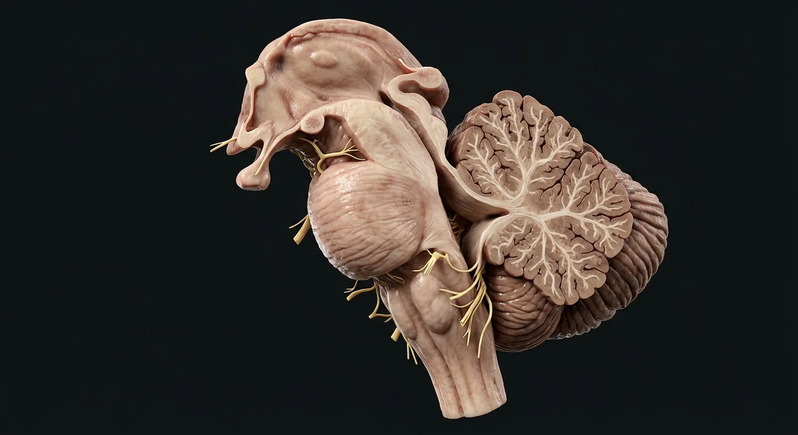

ORGAN → UNDER THE LENS
Neuron and glial support
Tap to compare the organ region with a tissue-level teaching illustration.
Read about Cerebellar cortex ↓Locate brainstem levels, cranial-nerve nuclei, pyramids and cerebellar peduncles, cortex and nuclei.

Superior colliculusMidbrainInferior colliculusSubstantia nigraCerebral pedunclesPontine nucleiPonsCerebellar cortexSuperior cerebellar peduncleCerebellar vermisCerebellar hemispheresFourth ventricleMiddle cerebellar peduncleNucleus tractus solitariiInferior cerebellar peduncleMedulla oblongataInferior olivesMedullary pyramidsMidbrain, pons and medulla form the brainstem, carrying ascending sensation and descending motor commands while housing many cranial nerve nuclei and arousal/autonomic networks. Dorsal to pons and medulla, cerebellum compares intended and actual movement through cortex and deep nuclei. Inferior, middle and superior cerebellar peduncles connect it to medulla, pons and midbrain respectively; traffic direction is not identical in each peduncle. Purkinje cells inhibit deep nuclei; cerebellar dysfunction causes coordination deficits rather than classic isolated paralysis.
These are educational cutaways, not literal magnifications of an organ pixel or laboratory slides. A ring marks the approximate tissue region; part-specific lines appear only where identifiable.
Tap to compare the organ region with a tissue-level teaching illustration.
Read about Cerebellar cortex ↓Tap to compare the organ region with a tissue-level teaching illustration.
Read about Purkinje cell ↓These 20 structures describe anatomy related to the chapter’s regional illustration. Each entry separates location, function and a clinical point.
Rostral brainstem around cerebral aqueduct between diencephalon and pons.
What it doesHosts III/IV-related nuclei and visual/auditory orienting circuits.
Clinical connectionMidbrain lesions can combine ocular and long-tract signs.
Dorsal midbrain paired structure.
What it doesCoordinates orienting eye/head movements to visual stimuli.
Clinical connectionNot the origin of the optic nerve.
Dorsal caudal midbrain auditory relay structure.
What it doesIntegrates auditory pathway toward thalamus.
Clinical connectionAuditory pathways are largely bilateral centrally.
Pigmented midbrain nuclei with pars compacta and reticulata.
What it doesDopaminergic modulation and basal-ganglia output.
Clinical connectionDegeneration of pars compacta occurs in Parkinson disease.
Ventral midbrain bundles carrying major descending cortical fibers.
What it doesTransmit corticospinal, corticobulbar and corticopontine signals.
Clinical connectionVentral lesion may cause contralateral weakness.
Bulging middle brainstem with pontine nuclei and transverse fibers.
What it doesRelays cortico-ponto-cerebellar signals.
Clinical connectionFacial and abducens pathways traverse pontine region.
Ventral pontine relay receiving extensive cortical input.
What it doesProject contralaterally through middle cerebellar peduncle.
Clinical connectionConnect cerebral plans to cerebellum.
Caudal brainstem continuous with spinal cord.
What it doesContains autonomic, swallowing and motor/sensory pathways.
Clinical connectionMedullary injury can compromise respiration and circulation.
Ventral medullary corticospinal bundles.
What it doesMajor descending voluntary motor route.
Clinical connectionMost fibers cross at caudal pyramidal decussation.
Ventral-lateral medullary elevations containing inferior olivary complex.
What it doesProvide climbing-fiber teaching signals to cerebellum.
Clinical connectionLateral medullary lesions can affect nearby pathways.
Between dorsal pons/upper medulla and cerebellum.
What it doesChannels CSF into subarachnoid spaces.
Clinical connectionIts floor is rhomboid fossa.
Midline structure joining cerebellar hemispheres.
What it doesCoordinates trunk, posture and gait.
Clinical connectionMidline disease often causes truncal ataxia.
Lateral folded portions of cerebellum.
What it doesCoordinate skilled limb timing and error correction.
Clinical connectionLesions usually cause ipsilateral limb ataxia.
Molecular, Purkinje-cell and granular layers on folia.
What it doesTransforms incoming signals into inhibitory Purkinje output.
Clinical connectionThree-layer pattern differs from six-layer neocortex.
Large inhibitory neuron forming a single cell-body row between molecular and granular cerebellar layers.
What it doesSends GABAergic output to deep cerebellar and vestibular nuclei.
Clinical connectionPurkinje-cell degeneration causes cerebellar ataxia; distinct from cardiac Purkinje conduction fibers.
Dentate, interposed and fastigial groups deep in white matter.
What it doesProvide major cerebellar output to motor networks.
Clinical connectionLesions produce dysmetria and coordination deficits.
Connects cerebellum to midbrain; many deep-nuclear outputs course here.
What it doesTransmits major cerebellar efferents.
Clinical connectionSome afferent fibers also traverse it.
Large connection from contralateral pontine nuclei to cerebellum.
What it doesCarries chiefly pontocerebellar afferents.
Clinical connectionLinks cerebral cortex via pons to cerebellum.
Connects cerebellum to medulla/spinal pathways; mixed incoming and outgoing fibers.
What it doesBrings vestibular, spinal and olivary signals.
Clinical connectionDo not assume all three peduncles carry the same direction.
Dorsal medullary sensory nucleus receiving visceral and taste afferents.
What it doesIntegrates cardiorespiratory reflex and taste pathways.
Clinical connectionMedullary lesions disrupt autonomic reflexes.
Short answers grounded in the structures described above. Use the illustrated guide for anatomical context.
The brainstem consists of midbrain, pons and medulla. It carries major pathways and houses many cranial-nerve nuclei.
The cerebellum helps coordinate movement, timing and balance by integrating sensory and motor information; it is not the same structure as the brainstem.
Rostral brainstem around cerebral aqueduct between diencephalon and pons. Function: Hosts III/IV-related nuclei and visual/auditory orienting circuits.
Dorsal caudal midbrain auditory relay structure. Function: Integrates auditory pathway toward thalamus.
Function: Transmit corticospinal, corticobulbar and corticopontine signals. Ventral midbrain bundles carrying major descending cortical fibers.
Follow these connected structures and body systems in the illustrated atlas.
 BrainMidsagittal section: cerebrum, diencephalon, brainstem and cerebellum around the ventricular system.↗
BrainMidsagittal section: cerebrum, diencephalon, brainstem and cerebellum around the ventricular system.↗ Cerebrum · cortex & deep pathwaysTrace cortex, white matter, corpus callosum, basal nuclei and thalamus on a realistic coronal section.↗
Cerebrum · cortex & deep pathwaysTrace cortex, white matter, corpus callosum, basal nuclei and thalamus on a realistic coronal section.↗ Meninges, CSF & venous sinusesFollow dura, arachnoid and pia; then CSF from choroid plexus to subarachnoid drainage.↗
Meninges, CSF & venous sinusesFollow dura, arachnoid and pia; then CSF from choroid plexus to subarachnoid drainage.↗ Cranial nervesTwelve pairs leave the brain directly — smell to tongue movement — and they are examined in strict order in every neurological exam.↗
Cranial nervesTwelve pairs leave the brain directly — smell to tongue movement — and they are examined in strict order in every neurological exam.↗General anatomy references and related source chapters for continued study. These links do not make the digital illustrations clinical images or certify every anatomical variant.
This educational page is not medical advice and has not undergone formal clinical peer review. Spotted an error? Contact the editor.
Open the realistic interactive plate, label lines, focus view and self-test.